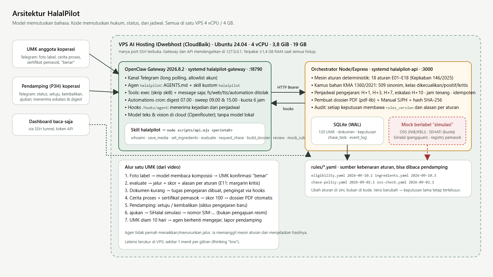
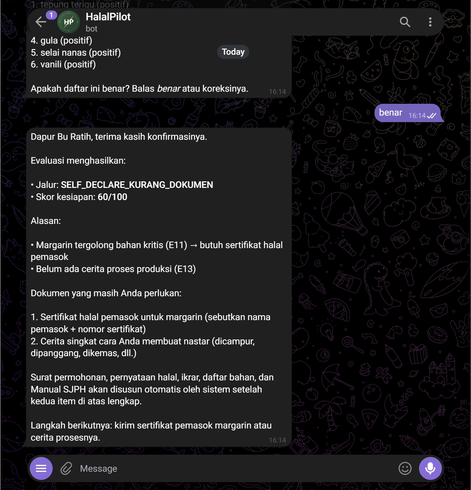
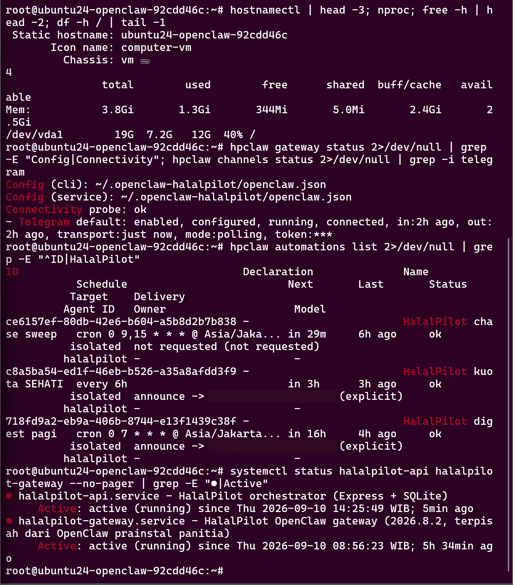
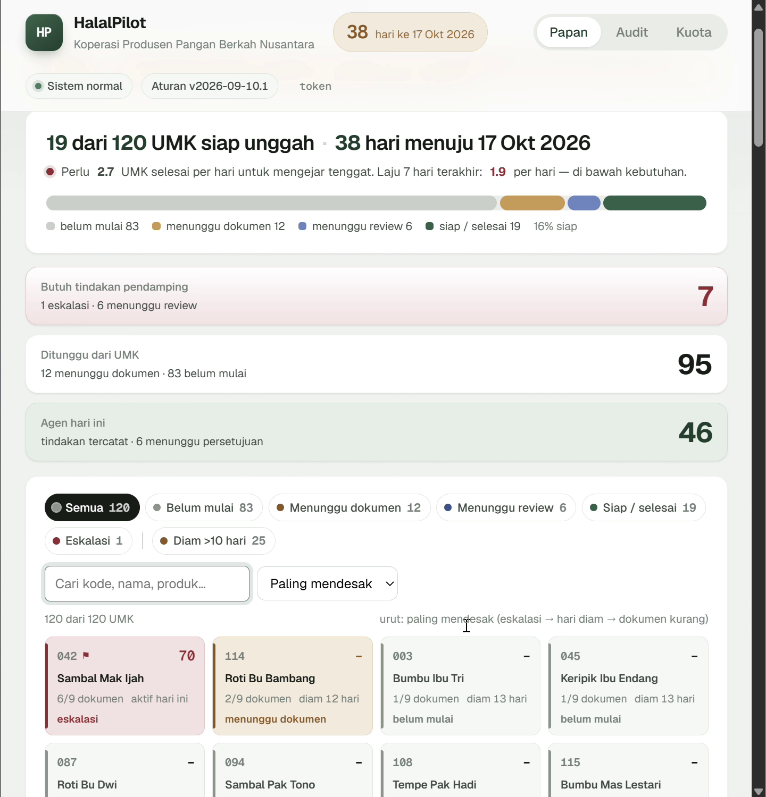

HalalPilot: Agen OpenClaw yang Menyiapkan dan Mengejar Berkas Halal Self-Declare untuk 120 UMK di Satu VPS 4 GB
Ringkasan untuk pembaca umum. Mulai 17 Oktober 2026, makanan dan minuman UMK wajib bersertifikat halal, tetapi baru sekitar 4% pelaku usaha yang produknya sudah bersertifikat. Kuota gratis dan pendampingnya sudah ada; yang tidak ada adalah orang yang mengerjakan berkasnya dan menagih dokumen yang belum dikirim. HalalPilot adalah agen AI di Telegram untuk koperasi yang melakukan dua pekerjaan itu: membaca foto label, menyusun berkas, lalu mengingatkan UMK sampai lengkap dan melapor ke pendamping bila UMK diam. Aturan halalnya dicek oleh kode, bukan ditebak model; keputusan akhir tetap di tangan pendamping dan BPJPH. Semuanya berjalan di satu VPS kecil.
Abstrak. Menjelang berakhirnya penahapan wajib halal untuk produk makanan dan minuman UMK pada 17 Oktober 2026, hambatan terbesar bukan kuota atau jumlah pendamping, melainkan pekerjaan menyiapkan berkas dan mengejar dokumen yang tidak pernah lengkap. Tulisan ini melaporkan HalalPilot, agen OpenClaw di Telegram untuk koperasi yang membantu UMK anggotanya menyiapkan berkas sertifikasi jalur self-declare, lalu mengejar dokumen yang belum dikirim sampai berkas layak ditinjau pendamping. Kontribusinya empat: (1) pembagian tegas antara model yang membaca dan menulis dengan kode yang memutuskan; (2) mesin aturan YAML berversi dengan 18 aturan dari teks asli Keputusan Kepala BPJPH 146/2025 dan kamus bahan dari lampiran KMA 1360/2021; (3) kebijakan pengejaran empat tahap dengan eskalasi ke manusia; (4) laporan replikasi di satu VPS 4 vCPU dengan memori 3,8 GiB memakai OpenClaw 2026.8.2, termasuk lima temuan konfigurasi. Seluruh alur berjalan ujung ke ujung dan terekam, dengan 86 uji otomatis dan 86 skenario penerimaan. Integrasi ke portal pemerintah masih simulasi berlabel, dan hanya 3 dari 120 UMK yang dijalankan lewat Telegram nyata.
Kata kunci: agen AI, OpenClaw, sertifikasi halal, self-declare, UMK, mesin aturan, human-in-the-loop, VPS.
1. Pendahuluan
Ekonom INDEF A. Hakam Naja, mengutip data Bappenas 2026, menyebut baru sekitar 4 persen pelaku usaha di Indonesia yang produknya bersertifikat halal [5]. Padahal penahapan kewajiban halal untuk produk makanan dan minuman UMK berakhir 17 Oktober 2026 menurut PP 42/2024 [1], [8], dan dalam rapat koordinasi di Kemenko PMK pada 12 Agustus 2026 Kementerian Agama menegaskan tidak ada pergeseran jadwal [2].
Kapasitas di atas kertas tersedia. BPJPH membuka 1,35 juta kuota sertifikasi gratis lewat SEHATI 2026 dan mencatat lebih dari 111 ribu Pendamping Proses Produk Halal (P3H) [3]. Produk UMK yang sudah bersertifikat mencapai sekitar 13 juta, kumulatif sejak 2019 [4]. Dua angka itu berbeda satuan, 13 juta menghitung produk dan 4 persen menghitung pelaku usaha, tetapi keduanya menunjuk hal yang sama: yang tertinggal adalah usaha kecil yang berkasnya tidak pernah lengkap sejak awal.
Masalahnya di lapangan sederhana. Satu pendamping memegang puluhan sampai ratusan UMK. Dokumen datang sepotong-sepotong lewat pesan singkat: foto label yang buram, cerita proses yang belum ditulis, nomor sertifikat pemasok yang belum ditanyakan. Tidak ada yang bertugas mengejar yang kurang. Pertanyaan yang dijawab tulisan ini: bisakah satu agen bahasa, yang kualitas modelnya tidak kita kendalikan, dipercaya mengerjakan penyiapan dan pengejaran berkas tanpa pernah memegang keputusan yang berdampak hukum?
Kontribusi tulisan ini:
- Pembagian model dan kode yang eksplisit (Bagian 4): model membaca dan menulis; kode memutuskan jalur, dokumen wajib, jadwal pengejaran, dan jejak audit.
- Mesin aturan YAML berversi (Bagian 5): 18 aturan E01 sampai E18 dengan rujukan butir ke teks asli Kepkaban BPJPH 146/2025 [6], dan kamus bahan dari 182 halaman lampiran KMA 1360/2021 [7].
- Kebijakan pengejaran deklaratif (Bagian 5.4): empat tahap dengan jam tenang, batas pesan harian, dan eskalasi ke pendamping.
- Laporan replikasi (Bagian 6 dan 7): konfigurasi OpenClaw 2026.8.2 yang bekerja di VPS 4 GB, lima temuan yang menghabiskan malam, dan hasil uji ujung ke ujung.
2. Rumusan masalah
Objek yang dikelola adalah portofolio: himpunan UMK anggota koperasi, masing-masing dengan produk, daftar bahan, dan dokumen yang statusnya diminta, diterima, dihasilkan, atau ditolak. Untuk setiap UMK, sistem menghasilkan keputusan jalur: tidak layak, reguler lewat Lembaga Pemeriksa Halal (LPH), self-declare kurang dokumen, atau self-declare siap unggah.
Tujuannya memaksimalkan jumlah UMK yang siap unggah sebelum 17 Oktober, dengan dua kendala. Kendala integritas bersifat keras: setiap keputusan jalur harus tertelusur ke aturan bernomor dan versi aturan yang dipakai; keputusan yang tidak tertelusur tidak dihitung sebagai kemajuan. Kendala biaya bersifat lunak: pengejaran dibatasi jumlah pesan harian, jam tenang, dan jumlah pengingat sebelum dilaporkan ke manusia (rinciannya di Bagian 5.4).
Prinsipnya: kecepatan hanya dihitung bila integritas terjaga. Skor kesiapan didefinisikan sederhana agar bisa dibaca pendamping: 100 dikurangi jumlah bobot aturan yang tidak lolos, dengan batas bawah nol.
3. Posisi terhadap layanan yang ada
BPJPH sudah punya Halalmax sebagai dasbor pendamping dan chatbot untuk pertanyaan umum, dan aplikasi pemindai bahan sudah banyak. Celahnya bukan informasi, melainkan pekerjaan: tidak ada yang mengerjakan penyiapan berkas dan mengejar dokumen yang belum dikirim (Tabel 1).
Tabel 1. Chatbot halal pada umumnya dibandingkan HalalPilot.
| Dimensi | Chatbot halal / pemindai bahan | HalalPilot |
|---|---|---|
| Satuan kerja | Satu pertanyaan, satu jawaban | Satu portofolio UMK sampai siap unggah |
| Inisiatif | Menunggu ditanya | Mengejar dokumen pada jadwal yang ditentukan kebijakan |
| Dasar keputusan | Jawaban model | Aturan YAML bernomor dengan versi, model hanya menjelaskan |
| Keluaran | Teks | Berkas self-declare PDF ber-hash, log audit, ringkasan pagi |
| Titik kendali manusia | Tidak ada | UMK mengonfirmasi bahan, pendamping menyetujui atau mengembalikan |
| Pengguna | UMK tunggal atau publik | Koperasi atau paguyuban dengan pendamping |
Karena itu HalalPilot dipasang untuk koperasi atau paguyuban produsen yang punya pendamping untuk banyak anggota sekaligus. Halalmax adalah tempat paket akhirnya diunggah, bukan pesaing.
4. Arsitektur sistem

Gambar 1 menunjukkan empat lapis. Kanal Telegram menerima foto dan teks dari UMK dan pendamping. Gateway OpenClaw menjalankan agen dengan satu skill kustom berisi dua puluh perintah, dan menerima hook untuk pesan proaktif. Orchestrator Express memegang API, mesin aturan, penjadwal pengejaran, dan pembuat PDF. Penyimpanan SQLite menyimpan portofolio, keputusan append-only, tugas pengejaran, dan log audit. Portal OSS, SEHATI, dan SiHalal hadir sebagai tiruan berlabel "simulasi".
Yang membedakan arsitektur ini dari agen percakapan biasa adalah arah panah pada keputusan: agen tidak pernah menaikkan atau menurunkan jalur sendiri. Ia memanggil mesin aturan dan menjelaskan hasilnya. Tabel 2 merinci pembagiannya.
Tabel 2. Yang diputuskan model dan yang diputuskan kode.
| Diputuskan model (OpenClaw + model cloud) | Diputuskan kode (Express + SQLite + YAML) |
|---|---|
| Membaca foto label dan kemasan | Kelayakan self-declare: 18 aturan E01 sampai E18 dari Kepkaban BPJPH 146/2025 |
| Memahami bahasa UMK yang tidak baku | Kelas bahan menurut KMA 1360/2021 dan dokumen yang wajib menyusul |
| Menulis pengingat dengan nada yang pas | Jadwal pengejaran, jam tenang, batas dua pesan per UMK per hari |
| Merangkum portofolio untuk pendamping | Idempotensi, log audit, hash SHA-256 setiap berkas |
Alasannya: model yang kualitasnya tidak saya kendalikan tidak boleh memegang keputusan yang berdampak hukum. Aturan hidup di berkas YAML yang bisa dibaca pendamping, diberi nomor versi, dan diubah tanpa menyentuh kode.
5. Metode
5.1 Alur kerja agen dan titik kendali manusia
Alurnya tetap: intake → konfirmasi → evaluasi → pengejaran → berkas → tinjauan → pengajuan. Dua titik kendali manusia disisipkan dengan sengaja. Pertama, daftar bahan hasil pembacaan foto harus dikonfirmasi UMK sebelum dievaluasi (aturan E14), sehingga kesalahan baca model tidak pernah langsung menjadi keputusan. Kedua, berkas yang tersusun harus disetujui pendamping lewat perintah setuju atau dikembalikan lewat kembalikan dengan satu kalimat alasan; pengembalian mencatat keputusan baru dengan skor yang turun dan memulai pengejaran lagi.
Tiga UMK fiktif dari video menggambarkan alurnya:
- Dapur Bu Ratih (nastar). UMK memfoto label. Agen membaca komposisi, meminta konfirmasi, lalu mesin aturan menemukan margarin sebagai bahan kritis yang butuh sertifikat pemasok (E11). Setelah cerita proses dan nomor sertifikat masuk, skor mencapai 100 dan berkas self-declare tersusun untuk ditinjau pendamping.
- Sambal Mak Ijah. Bahannya aman, tetapi kode KBLI di NIB tidak mencakup produknya (E15). Agen meminta perbaikan data OSS dan foto label. Ketika UMK diam, pengingat datang pada hari ke-1, ke-3, dan ke-7 dengan nada meningkat; pada hari ke-10 agen berhenti mengejar dan melapor ke pendamping.
- Bakso Pak Darto. Daging digiling di pasar tanpa bukti dari rumah potong bersertifikat (E09, E10). Agen tidak menolak, tetapi meminta dokumen yang tepat dan menjelaskan aturannya.

Setiap jawaban mengikuti pola yang sama: jalur, alasan dengan kode aturan, dokumen yang diminta, langkah berikutnya (Gambar 2). Setiap pagi pukul tujuh pendamping menerima ringkasan portofolio di Telegram.
5.2 Mesin aturan
Mesin aturan mengevaluasi 18 aturan terhadap data UMK, produk, bahan, dokumen, dan hasil pengecekan NIB. Setiap aturan membawa kolom butir yang menunjuk nomor kriteria resmi di Kepkaban BPJPH 146/2025, yang teks aslinya dibaca pada 10 September 2026. Efek aturan diurutkan dari yang paling ketat: memaksa hasil tidak layak, memaksa jalur reguler, atau menambah dokumen wajib. Hasil akhirnya adalah efek terburuk yang aktif. Setiap keputusan tersimpan bersama versi aturannya, dan dua evaluasi dengan masukan sama menghasilkan keputusan identik; keduanya diuji.
5.3 Kamus bahan
Kamus bahan memuat 498 sinonim yang dinormalisasi ke nama baku dengan toleransi salah ketik dua huruf, 124 bahan dikecualikan dari lampiran KMA 1360/2021 (56 bahan alam, 2 olahan tidak berisiko, 66 bahan kimia relevan pangan), 24 bahan positif, 33 bahan kritis yang wajib sertifikat pemasok, serta 11 bahan sembelihan, 12 haram eksplisit, dan 5 berbahaya. Bahan di luar kamus tidak ditebak; aturan E12 meminta konfirmasi UMK.
5.4 Kebijakan pengejaran
Kebijakan pengejaran cukup dibaca sekali oleh orang non-teknis, karena hidup di satu berkas YAML:
tahapan:
- { tahap: 1, setelah_jam: 24, target: umk, nada: ramah }
- { tahap: 2, setelah_jam: 72, target: umk, nada: tegas_sopan }
- { tahap: 3, setelah_jam: 168, target: umk, nada: mendesak }
- { tahap: 4, setelah_jam: 240, target: pendamping, nada: laporan }
batas: { maks_pengingat_per_dokumen: 3, maks_pesan_per_umk_per_hari: 2, gabungkan_dokumen: true }
jam_tenang: { mulai: "21:00", selesai: "07:00", tz: Asia/Jakarta }
Penjadwal di Express menghitung jatuh tempo, menggabungkan beberapa dokumen dalam satu pesan, dan memanggil hooks OpenClaw dengan kunci idempoten. Model hanya menulis kalimat pengingatnya dari templat nada yang ditentukan. Dokumen yang diterima, atau UMK yang ditandai tunda oleh pendamping, membatalkan sisa tugas secara otomatis.
5.5 Dua lapis pengaman terhadap improvisasi model
Lapis pencegahan ada di instruksi dan konfigurasi agen: dilarang menambah janji apa pun, tanpa akses berkas atau web selain skrip skill. Lapis deteksi ada di kode: keputusan hanya lahir dari mesin aturan, daftar bahan wajib dikonfirmasi manusia, setiap permintaan API idempoten, dan setiap keputusan serta pesan tercatat di log audit. Pencegahan tanpa deteksi terlalu percaya pada model; deteksi tanpa pencegahan membuang tenaga menangkap kesalahan yang bisa dihindari.
6. Penerapan di VPS 4 GB
Servernya satu: Ubuntu 24.04, 4 vCPU, memori 3,8 GiB, disk 19 GB. Yang berjalan hanya Gateway OpenClaw, satu proses Node untuk API dan penjadwal, dan SQLite; tanpa Chromium, tanpa model lokal. Saat semuanya hidup, termasuk satu OpenClaw lain yang sudah terpasang di server itu, pemakaian memori terukur 1,4 GB dari 3,9 GB (Gambar 3). Model lokal 3 sampai 4 miliar parameter tidak muat berdampingan di memori sebesar itu, jadi pemahaman bahasa dan gambar diserahkan ke model cloud lewat OpenRouter. Swap 2 GB dipasang sebagai jaring pengaman dan tidak terpakai selama demo.

Seluruh demo berjalan di satu paket AI Hosting IDwebhost yang disediakan panitia AI HackFest 2026 dengan OpenClaw sudah terpasang saat server diserahkan. Saya memasang versi terkunci 2026.8.2 secara terpisah di prefix sendiri, dengan state, port, dan unit systemd sendiri, tanpa menyentuh instalasi bawaan. Pelajaran mahalnya: percobaan pertama npm install -g tanpa prefix menimpa paket bawaan dan harus dipulihkan. Untuk replikasi di koperasi lain, Cloud VPS 4 core dengan memori 4 GB sudah lebih dari cukup, karena beban terberat ada di sisi model cloud, bukan di server. Pengamanan yang dipasang dirangkum di Tabel 3.
Tabel 3. Kontrol keamanan dan alasan masing-masing.
| Kontrol | Alasan |
|---|---|
| Gateway dan API hanya mendengarkan di loopback; dasbor lewat SSH tunnel | Tidak ada permukaan HTTP publik |
| Firewall hanya membuka port SSH | Port UI OpenClaw bawaan panitia yang tanpa autentikasi tertutup dari internet |
Kanal Telegram dibatasi ke akun terdaftar (dmPolicy: allowlist) |
Orang luar hanya bisa mendaftar, tidak bisa memberi perintah |
| Tanpa skill dari marketplace; versi OpenClaw dikunci 2026.8.2 | Rantai pasok dapat diaudit; perilaku tidak berubah diam-diam |
| Agen tanpa akses berkas, web, media, dan TTS; hanya skrip skill | Ruang improvisasi model dipersempit |
| Tanpa data pribadi; persetujuan sebelum pemrosesan; hapus data meninggalkan satu baris audit ber-hash | Sejalan dengan UU 27/2022 [9] |
7. Evaluasi
7.1 Metode evaluasi
Evaluasi memakai tiga lapis bukti: 86 uji otomatis yang mencakup mesin aturan, pengecekan NIB, dan integrasi HTTP; 86 skenario penerimaan tertulis, satu berkas per skenario positif dan negatif; dan uji ujung ke ujung lewat Telegram nyata pada 10 September 2026, lalu diulang di VPS untuk rekaman video. Angka uji di tulisan ini dijalankan ulang pada 19 September, bukan disalin dari catatan lama.
7.2 Hasil

Tabel 4 merangkum alur yang berjalan ujung ke ujung dan terekam.
Tabel 4. Alur yang lolos ujung ke ujung dan buktinya.
| Alur | Bukti |
|---|---|
| Intake foto → konfirmasi bahan → evaluasi dengan kode aturan → cerita proses → sertifikat pemasok → skor 100 → berkas PDF v1 | Transkrip Telegram, PDF di server |
| Pendamping mengembalikan berkas dengan alasan → UMK diberi tahu → skor turun → pengejaran dimulai lagi | Transkrip, API tinjauan |
| Foto ulang masuk → permintaan tertutup otomatis → berkas v2 → disetujui → diajukan ke SiHalal simulasi | Transkrip, nomor simulasi |
| Sapuan pengejaran tahap 1 sampai 3 dengan waktu disimulasikan; sapuan ulang tidak mengirim dua kali | Keluaran API, pesan Telegram sebagai teks |
| Eskalasi tahap 4 tiba di pendamping dengan isi yang benar | Transkrip |
| Ringkasan pagi pukul 07.00 tiba dari cron tanpa campur tangan | Transkrip, daftar automations (Gambar 3) |
| Dasbor 120 UMK dengan detail keputusan, dokumen, jejak agen (Gambar 4) | Tangkapan layar |
Latensi satu giliran agen sekitar satu menit dengan thinkingDefault: "low"; dengan medium satu sampai tiga menit karena agen memanggil beberapa perintah skill berurutan. Untuk alur yang langkahnya sudah ditentukan skill, low cukup.
7.3 Pelajaran dan mode kegagalan OpenClaw 2026.8.2
Bagian ini yang paling banyak memakan malam. Lima temuan, masing-masing dengan mitigasinya:
- Pengingat terkirim sebagai pesan suara. Plugin
talk-voiceaktif otomatis, dan setelah dimatikan, TTS inti masih mengirimsendVoiceketika model menyisipkan penanda suara (bawaantts.autoadalahtagged). Mitigasi: keduanya dimatikan, toolttsmasuk daftar tolak agen. - Heartbeat mengirim ke "target terakhir". Saat satu akun demo berganti peran, heartbeat bisa jatuh ke akun yang tidak ada. Mitigasi: heartbeat dimatikan; digest, sapuan, dan cek kuota lewat automations cron.
- Narasi rencana model bocor ke Telegram. Kalimat "saya akan menjalankan…" dan penanda "Exec" tampil sebelum jawaban akhir. Mitigasi:
blockStreamingDefault: "off"dan streaming Telegram dimatikan. - Daftar
allowpada tools hanya mempersempit profil.allow: [exec, message]pada profil minimal menghasilkan "No callable tools remain". Yang bekerja: profilcoding, tambahmessage, lalu tolak grup fs, web, ui, media, automation, dan tts. - Automations punya aturan bentuk sendiri. Job tanpa
--agentjatuh ke agen default, job--commandtanpa--no-delivermelempar keluarannya ke chat terakhir, dan--exactmematikan penggeseran acak jadwal.
Konfigurasi yang akhirnya dipakai, dipangkas ke bagian yang relevan:
agents: { defaults: {
blockStreamingDefault: "off", thinkingDefault: "low",
heartbeat: { every: "0m" } } },
channels: { telegram: { streaming: { mode: "off" }, accounts: { default: { dmPolicy: "allowlist" } } } },
plugins: { entries: { "talk-voice": { enabled: false } } },
tts: { enabled: false, auto: "off" },
Uji ujung ke ujung juga menemukan sembilan cacat aplikasi yang lolos uji unit, misalnya keputusan basi setelah berkas dikembalikan dan siklus pengejaran ganda. Semuanya dipindahkan ke kode agar tidak lagi bergantung pada kepatuhan model.
8. Ancaman terhadap validitas dan batas
Hasil di atas harus dibaca dengan empat batas yang saya tulis dengan angkanya:
- Ukuran sampel. Dari 120 UMK di portofolio, hanya 3 yang benar-benar dijalankan lewat Telegram. 117 sisanya data sintetis deterministik. Klaim skala belum teruji.
- Integrasi simulasi. OSS, SEHATI, dan SiHalal seluruhnya tiruan berlabel "simulasi". Integrasi resmi hanya bisa dibuka BPJPH; sampai saat itu paket yang disetujui tetap diunggah manusia.
- Validitas kamus. Kelas dikecualikan disalin dari lampiran KMA 1360/2021, tetapi kelas positif dan kritis disusun dari praktik lembaga pemeriksa halal dan belum divalidasi P3H atau LPH. Itu dicatat terbuka di berkas kamusnya.
- Belum ada uji lapangan dengan koperasi nyata, sehingga klaim "dari satu jam menjadi satu menit per berkas" di Bagian 10 adalah perkiraan dari alur demo, bukan pengukuran.
Di atas semua itu, HalalPilot menyiapkan berkas, tidak menerbitkan sertifikat dan tidak menjanjikan hasil. Keputusan halal sepenuhnya milik BPJPH dan pendamping, dan seluruh entitas demo fiktif.
9. Arah lanjutan
Tiga langkah berikutnya mengikuti langsung dari batas di atas: uji lapangan dengan satu koperasi nyata setelah 17 Oktober, dengan pengukuran waktu pendamping per berkas sebelum dan sesudah; validasi kelas positif dan kritis bersama P3H atau LPH; dan kanal WhatsApp resmi serta pengejaran langsung ke pemasok dengan izin eksplisit UMK, yang kebijakannya sudah ada di YAML tetapi belum dinyalakan di demo.
10. Kesimpulan
Ukuran keberhasilannya ada di meja pendamping: dari menyusun berkas satu jam per UMK menjadi menyetujui satu berkas dalam satu menit, dengan setiap keputusan membawa rujukan aturannya. Kecepatan dan ketertelusuran tidak bertentangan bila pembagian kerjanya tegas: model membaca dan menulis, kode memutuskan, manusia memegang dua titik kendali. Sisanya, mengejar foto yang belum dikirim pada hari ke-3 dan ke-7, adalah pekerjaan yang paling cocok diserahkan ke agen yang tidak pernah bosan.
Proyek ini dibuat untuk AI HackFest 2026 IDwebhost. Kode, aturan YAML, konfigurasi OpenClaw, skenario uji, dan data seed tersedia dengan lisensi MIT di github.com/fauzan3596/HalalPilot. Video demo: [URL video].
Referensi
[1] BPJPH, "BPJPH: 17 Oktober 2026 Produk Makanan-Minuman UMK Harus Sudah Bersertifikat Halal, Bagaimana dengan Produk Luar Negeri?", 21 Oktober 2024. [Daring]. Tersedia: https://bpjph.halal.go.id/detail/bpjph-17-oktober-2026-produk-makanan-minuman-umk-harus-sudah-bersertifikat-halal-bagaimana-dengan-produk-luar-negeri/
[2] Republika, "Kemenag Pastikan Wajib Halal Tetap Berlaku Oktober 2026", 1 September 2026. [Daring]. Tersedia: https://sharia.republika.co.id/berita/tkobdl423/kemenag-pastikan-wajib-halal-tetap-berlaku-oktober-2026
[3] BPJPH, "Kabar Gembira, BPJPH Buka Kuota 1,35 Juta Sertifikasi Halal Gratis 2026 bagi UMK", 2 Januari 2026 (juga memuat jumlah P3H). [Daring]. Tersedia: https://bpjph.halal.go.id/detail/kabar-gembira-bpjph-buka-kuota-1-35-juta-sertifikasi-halal-gratis-2026-bagi-umk/
[4] Harian Jogja, "BPJPH Klaim 13 Juta Produk UMKM Kantongi Sertifikat Halal", 7 Juni 2026. [Daring]. Tersedia: https://ekbis.harianjogja.com/r-1258900/bpjph-klaim-13-juta-produk-umkm-kantongi-sertifikat-halal
[5] Republika, "Sertifikasi Halal Wajib Oktober 2026, Kesiapan Pelaku Usaha Jadi Tantangan", 21 Agustus 2026. [Daring]. Tersedia: https://sharia.republika.co.id/berita/tk3rz0370/sertifikasi-halal-wajib-oktober-2026-kesiapan-pelaku-usaha-jadi-tantangan
[6] Kepala BPJPH, Keputusan No. 146 Tahun 2025 tentang Petunjuk Teknis Layanan Permohonan Sertifikasi Halal atas Produk yang Tidak Wajib. [Daring]. Tersedia: https://cmsbl.halal.go.id/uploads/146_2025_Kep_Ka_BPJPH_Petunjuk_Teknis_Layanan_Permohonan_Sertifikasi_Halal_atas_Produk_yang_Tidak_Wajib_546bcae1d3.pdf
[7] Menteri Agama, Keputusan No. 1360 Tahun 2021 tentang Bahan yang Dikecualikan dari Kewajiban Bersertifikat Halal. [Daring]. Tersedia: https://halal.kemenperin.go.id/kma-nomor-1360-tentang-bahan-yang-dikecualikan-dari-kewajiban-bersertifikat-halal/
[8] Pemerintah Republik Indonesia, Peraturan Pemerintah No. 42 Tahun 2024 tentang Penyelenggaraan Bidang Jaminan Produk Halal, 2024.
[9] Pemerintah Republik Indonesia, Undang-Undang No. 27 Tahun 2022 tentang Pelindungan Data Pribadi, 2022.